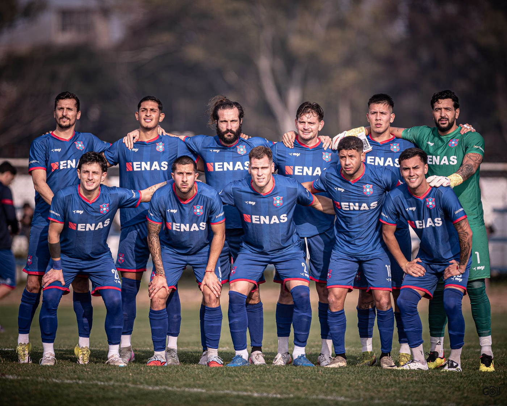
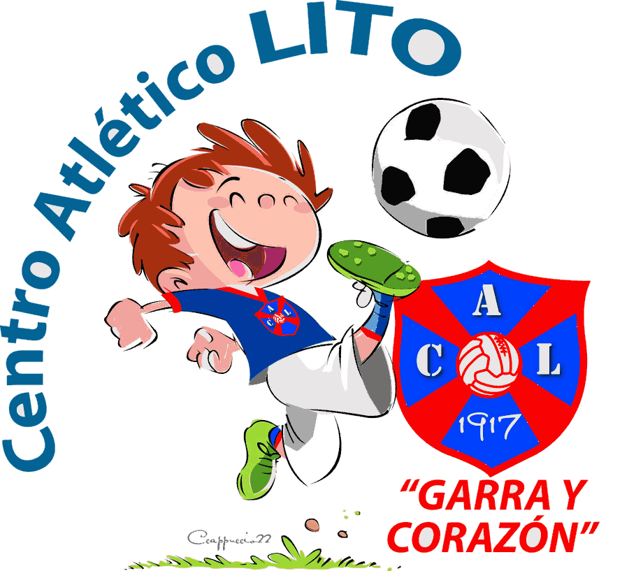

Youth
Ask the club about age groups and training times.
Chapter II
The ones who wear our shirt. First team, coaching staff and youth sides.
First team of Centro Atlético Lito, 2026 season. Positions without a name are to be confirmed.
Loading squad…
Coaching staff

Youth football
Lito runs youth age groups all year round. To join, write to the club with your name, age and age group.

Ask the club about age groups and training times.
Ask the club about age groups and training times.
Ask about upcoming trials via contact.
II · Squad · Centro Atlético Lito